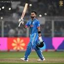

Kohli completes his record-equalling 49th ODI hundred in the ICC Cricket World Cup match against South Africa.India’s Virat Kohli has scored his 49th one-day international (ODI) hundred to equal compatriot Sachin Tendulkar’s world record.The former India captain, who turned 35 on the day of his record-equalling century, has scored more than 13,000 runs in the format. He reached the landmark in 277 ODI innings, which also include 70 half-centuries.
The birthday boy makes his 49th century
 for rcb